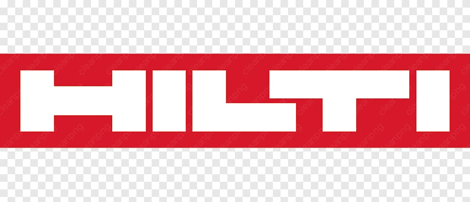

Certifikovaní partneři a spolupráce



Požární bezpečnost staveb
PBŘ dokumentace, ucpávky prostupů, požární dveře a revize PO.
Vše potřebné pro stavební povolení i provoz budovy.
Praha · Středočeský kraj · Královéhradecký kraj
· Pardubický kraj · Liberecký kraj · Olomoucký kraj
Služby a PBZ
PBZ je soubor technických zařízení pro detekci, varování, odvod kouře, hašení a podporu zásahu. Níže jsou všechny typy, se kterými pracujeme.
Ovládání energií a „bezpečné vypnutí"
Nouzové napájení a kabeláže
Evakuace a orientace
Zařízení pro požární zásah a výtahy
Detekce, signalizace, řízení
Odvod kouře a tepla, větrání
Požární uzávěry, dělení a požární klapky
Stabilní a polostabilní hasicí zařízení
Zdroje vody a prostředky pro zásah
Další časté prvky (podle stavby)
← Přetáhněte pro procházení →
PBZ dokumentace
Kontroluje se
Četnost
Kontroluje se
Četnost
Kontroluje se
Četnost
Kontroluje se
Četnost
Kontroluje se
Četnost
Kontroluje se
Četnost
Kontroluje se
Četnost
Kontroluje se
Četnost
Kontroluje se
Četnost
Kontroluje se
Četnost (orientačně)
Kontroluje se
Četnost
Kontroluje se
Četnost
Proč spolupracovat právě s námi
PBŘ zpracujeme ještě před vydáním povolení a jsme u stavby až do kolaudace. Výsledek: žádné mezery v dokumentaci, žádné překvapení při přejímce.
Montáže, dokumentace i revize zajišťujeme sami — nekomunikujete s pěti různými dodavateli. Jeden kontakt, jeden protokol, jedna odpovědnost.
Působíme v Praze, Středočeském, Královéhradeckém, Pardubickém a Olomouckém kraji. Zákonné požadavky a lokální praxe HZS se liší — my je sledujeme.
Bytové domy, průmyslové haly, kanceláře, zdravotnická zařízení, sklady. Přes 120 zpracovaných PBŘ a 85 000 m² ošetřených ploch.
Jak pracujeme / Průběh spolupráce
Popište nám stavbu nebo provoz. Odpovíme do 24 hodin s návrhem dalšího postupu.
Projdeme projektovou dokumentaci, navštívíme objekt a stanovíme rozsah požárně bezpečnostního řešení.
Zpracujeme PBŘ, provedeme montáže ucpávek a uzávěrů nebo zajistíme revize PBZ — dle rozsahu zakázky.
Obdržíte kompletní dokumentaci, protokoly a kontrolní plán pro provoz. Vše připravené pro kolaudaci a HZS.
Certifikovaní partneři a spolupráce

Kontakt
Pošlete e-mail, nebo nám zavolejte. Sdělte nám typ stavby, lokalitu a rozsah požadavků — zbytek vyřešíme společně.
Naskenujte QR kód

Naskenujte kód mobilem pro rychlý kontakt